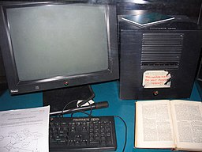
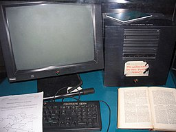

Memory management
Memory management
Among other things, a multiprogramming operating
system
kernel must be responsible for managing all system memory
which is currently in use by programs. This ensures that a program does not
interfere with memory already in use by another program. Since programs time
share, each program must have independent access to memory.
Cooperative memory management, used by many early
operating systems, assumes that all programs make voluntary use of the
kernel's memory manager, and do not exceed their allocated memory. This
system of memory management is almost never seen any more, since programs often
contain bugs which can cause them to exceed their allocated memory. If a program
fails, it may cause memory used by one or more other programs to be affected or
overwritten. Malicious programs or viruses may purposefully alter another
program's memory, or may affect the operation of the operating system itself.
With cooperative memory management, it takes only one misbehaved program to
crash the system.
Memory protection enables the
kernel to limit a process' access to the computer's memory. Various
methods of memory protection exist, including
memory segmentation and
paging. All methods require some level of hardware support (such as the
80286 MMU), which doesn't exist in all computers.
In both segmentation and paging, certain
protected mode registers specify to the CPU what memory address it should
allow a running program to access. Attempts to access other addresses trigger an
interrupt which cause the CPU to re-enter
supervisor
mode, placing the
kernel in charge. This is called a
segmentation violation or Seg-V for short, and since it is both difficult
to assign a meaningful result to such an operation, and because it is usually a
sign of a misbehaving program, the
kernel generally resorts to
terminating the offending program, and reports the error.
Windows versions 3.1 through ME had some level of
memory protection, but programs could easily circumvent the need to use it. A
general protection fault would be produced, indicating a segmentation
violation had occurred; however, the system would often crash anyway.
Virtual memory
The use of virtual memory addressing (such as
paging or segmentation) means that the kernel can choose what memory each
program may use at any given time, allowing the operating system to use the same
memory locations for multiple tasks.
If a program tries to access memory that isn't in
its current range of accessible memory, but nonetheless has been allocated to
it, the kernel is interrupted in the same way as it would if the program were to
exceed its allocated memory. (See section on memory management.) Under UNIX this
kind of interrupt is referred to as a
page fault.
When the kernel detects a page fault it generally
adjusts the virtual memory range of the program which triggered it, granting it
access to the memory requested. This gives the kernel discretionary power over
where a particular application's memory is stored, or even whether or not it has
actually been allocated yet.
In modern operating systems, memory which is
accessed less frequently can be temporarily stored on disk or other media to
make that space available for use by other programs. This is called
swapping, as an area of memory can be used by multiple programs, and what
that memory area contains can be swapped or exchanged on demand.
"Virtual memory" provides the programmer or the
user with the perception that there is a much larger amount of RAM in the
computer than is really there.
Multitasking
Multitasking refers to the running
of multiple independent computer programs on the same computer; giving the
appearance that it is performing the tasks at the same time. Since most
computers can do at most one or two things at one time, this is generally done
via time-sharing, which means that each program uses a share of the computer's
time to execute.
An operating system
kernel
contains a
scheduling program which determines how much time each
process spends executing, and in which order execution control should be passed
to programs. Control is passed to a process by the kernel, which allows the
program access to the
CPU and memory. Later, control is
returned to the kernel through some mechanism, so that another program may be
allowed to use the CPU. This so-called passing of control between the kernel and
applications is called a
context switch.
An early model which governed the allocation of
time to programs was called
cooperative multitasking. In this
model, when control is passed to a program by the kernel, it may execute for as
long as it wants before explicitly returning control to the kernel. This means
that a malicious or malfunctioning program may not only prevent any other
programs from using the CPU, but it can hang the entire system if it enters an
infinite loop.
Modern operating systems extend the concepts of
application preemption to device drivers and kernel code, so that the operating
system has preemptive control over internal run-times as well.
The philosophy governing
preemptive
multitasking is that of ensuring that all programs are given regular time
on the CPU. This implies that all programs must be limited in how much time they
are allowed to spend on the CPU without being interrupted. To accomplish this,
modern operating system kernels make use of a timed interrupt. A
protected mode timer is set by the kernel which triggers a return to
supervisor mode after the specified time has elapsed. (See above sections on
Interrupts and Dual Mode Operation.)
On many single user operating systems cooperative
multitasking is perfectly adequate, as home computers generally run a small
number of well tested programs. The
AmigaOS is an exception, having
preemptive multitasking from its first version.
Windows NT
was the first version of
Microsoft Windows which enforced
preemptive multitasking, but it didn't reach the home user market until
Windows XP (since
Windows NT was targeted at
professionals).
Disk access and file
systems
Access to data stored on disks is a central
feature of all operating systems. Computers store data on
disks using
files, which are structured in specific ways in order to
allow for faster access, higher reliability, and to make better use of the
drive's available space. The specific way in which files are stored on a disk is
called a
file system, and enables files to have names and
attributes. It also allows them to be stored in a hierarchy of directories or
folders arranged in a
directory tree.
Early operating systems generally supported a
single type of disk drive and only one kind of file system. Early file systems
were limited in their capacity, speed, and in the kinds of file names and
directory structures they could use. These limitations often reflected
limitations in the operating systems they were designed for, making it very
difficult for an operating system to support more than one file system.
While many simpler operating systems support a
limited range of options for accessing storage systems, operating systems like
UNIX and
Linux support a technology known as a
virtual file system or VFS. An operating system such as UNIX supports a
wide array of storage devices, regardless of their design or
file systems,
allowing them to be accessed through a common
application
programming interface (API). This makes it unnecessary for programs to
have any knowledge about the device they are accessing. A VFS allows the
operating system to provide programs with access to an unlimited number of
devices with an infinite variety of file systems installed on them, through the
use of specific
device drivers and file system drivers.
A connected
storage device,
such as a
hard drive, is accessed through a
device driver.
The device driver understands the specific language of the drive and is able to
translate that language into a standard language used by the operating system to
access all disk drives. On UNIX, this is the language of
block devices.
When the kernel has an appropriate device driver
in place, it can then access the contents of the disk drive in raw format, which
may contain one or more file systems. A file system driver is used to translate
the commands used to access each specific file system into a standard set of
commands that the operating system can use to talk to all file systems. Programs
can then deal with these file systems on the basis of filenames, and
directories/folders, contained within a hierarchical structure. They can create,
delete, open, and close files, as well as gather various information about them,
including access permissions, size, free space, and creation and modification
dates.
Various differences between file systems make
supporting all file systems difficult. Allowed characters in file names,
case sensitivity, and the presence of various kinds of
file attributes makes the implementation of a single interface for every
file system a daunting task. Operating systems tend to recommend using (and so
support natively) file systems specifically designed for them; for example,
NTFS in Windows and
ext3 and
ReiserFS
in Linux. However, in practice, third party drivers are usually available to
give support for the most widely used file systems in most general-purpose
operating systems (for example, NTFS is available in Linux through
NTFS-3g, and ext2/3 and ReiserFS are available in Windows through
third-party software).
Support for file systems is highly varied among
modern operating systems, although there are several common file systems which
almost all operating systems include support and drivers for. Operating systems
vary on file system support and on the disk formats they may be installed on.
Under Windows, each file system is usually limited in application to certain
media; for example, CDs must use
ISO 9660 or
UDF, and as of
Windows Vista, NTFS is the only file system which the
operating system can be installed on. It is possible to install Linux onto many
types of file systems. Unlike other operating systems, Linux and UNIX allow any
file system to be used regardless of the media it is stored in, whether it is a
hard drive, a disc (CD, DVD...), a USB flash drive, or even contained within a
file located on another file system.
Device drivers
A
device driver is a specific type of
computer software developed to allow interaction with hardware devices.
Typically this constitutes an interface for communicating with the device,
through the specific computer bus or communications subsystem that the hardware
is connected to, providing commands to and/or receiving data from the device,
and on the other end, the requisite interfaces to the operating system and
software applications. It is a specialized hardware-dependent computer program
which is also operating system specific that enables another program, typically
an operating system or applications software package or computer program running
under the operating system kernel, to interact transparently with a hardware
device, and usually provides the requisite interrupt handling necessary for any
necessary asynchronous time-dependent hardware interfacing needs.
The key design goal of device drivers is
abstraction. Every model of hardware (even within the same class of
device) is different. Newer models also are released by manufacturers that
provide more reliable or better performance and these newer models are often
controlled differently. Computers and their operating systems cannot be expected
to know how to control every device, both now and in the future. To solve this
problem, operating systems essentially dictate how every type of device should
be controlled. The function of the device driver is then to translate these
operating system mandated function calls into device specific calls. In theory a
new device, which is controlled in a new manner, should function correctly if a
suitable driver is available. This new driver ensures that the device appears to
operate as usual from the operating system's point of view.
Under versions of Windows before Vista and
versions of Linux before 2.6, all driver execution was co-operative, meaning
that if a driver entered an infinite loop it would freeze the system. More
recent revisions of these operating systems incorporate kernel preemption, where
the kernel interrupts the driver to give it tasks, and then separates itself
from the process until it receives a response from the device driver, or gives
it more tasks to do.
Networking
Currently most operating systems support a variety
of networking protocols, hardware, and applications for using them. This means
that computers running dissimilar operating systems can participate in a common
network for sharing resources such as
computing, files, printers, and scanners using either wired or wireless
connections. Networks can essentially allow a computer's operating system to
access the resources of a remote computer to support the same functions as it
could if those resources were connected directly to the local computer. This
includes everything from simple communication, to using networked file systems
or even sharing another computer's graphics or sound hardware. Some network
services allow the resources of a computer to be accessed transparently, such as
SSH which allows networked users direct access to a computer's command
line interface.
Client/server networking allows a program on a
computer, called a client, to connect via a network to another computer, called
a server. Servers offer (or host) various services to other network computers
and users. These services are usually provided through ports or numbered access
points beyond the server's
IP address. Each port number is
usually associated with a maximum of one running program, which is responsible
for handling requests to that port. A daemon, being a user program, can in turn
access the local hardware resources of that computer by passing requests to the
operating system kernel.
Many operating systems support one or more
vendor-specific or open networking protocols as well, for example,
SNA on
IBM systems,
DEC net on systems from
Digital Equipment Corporation, and Microsoft-specific protocols (SMB)
on Windows. Specific protocols for specific tasks may also be supported such as
NFS for file access. Protocols like
ESound, or esd can be easily extended over the network to provide sound
from local applications, on a remote system's sound hardware.
 
